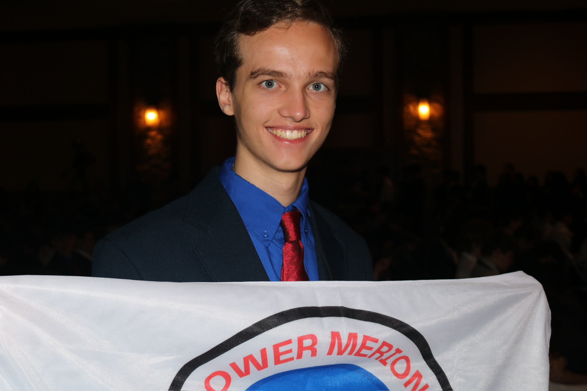

Bylaws
Lower Merion TSA Bylaws
Preamble
I believe that Technology Education holds an important place in my life in the technical world.
I believe that there is a need for the development of good attitudes concerning work, tools, materials, experimentation and processes of industry.
Guided by my teachers, artisans from industry, and my own initiative, I will strive to do my best in making my school, community, state, and nation better places in which to live.
I will accept the responsibilities that are mine.
I will accept the theories that are supported by proper evidence.
I will explore on my own for safer, more effective methods of working and living.
I will strive to develop a cooperative attitude and will exercise tact and respect for other individuals.
Through the work of my hands and mind, I will express my ideas to the best of my ability.
I will make it my goal to do better each day the task before me, and to be steadfast in my belief in my God, and my fellow Americans.
I. Name of the Organization
Section 1
The name of this organization shall be the Lower Merion Technology Student Association Chapter, henceforth referred to as Lower Merion TSA, LM TSA, or LM-TSA.
Section 2
The organization is a local branch of Pennsylvania Technology Student Association, hereinafter referred to as Pennsylvania TSA, PA TSA, or PA-TSA. Lower Merion TSA is an integral element of Pennsylvania TSA’s menagerie of local chapters dedicated to academic excellence in the fields of science, technology, engineering, and math (STEM).
Section 3
Lower Merion TSA is an integral part of the national Technology Student Association, Inc., accordingly referred to as TSA, Inc.
II. Purpose
The purpose of this organization shall be:
- To promote academic excellence and achievement among the membership of Lower Merion TSA.
- To excel in competition and in personal growth with regard to event competitions and educational venues of TSA.
- To enhance and cultivate personal development, leadership, and career opportunities in STEM.
- To apply the concepts of science, technology, engineering, and math through extracurricular activities, engagements, competitions, and related programs.
- To provide a platform for members to realize their interests, dreams, objectives, and passions unimpeded.
- To further the community through service and outreach, and to teach engineering principles to young students.
- To contribute to the National Service Project set forth by TSA, Inc. through means of fundraising.
- To fulfill the Mission Statement and Vision Statement of TSA, Inc.
- To fulfill the six primary goals of the Technology Student Association Constitution, that of which comprise: Leadership, Technology Education, Knowledge, Respect, Motivation, and Choices.
- To attain any and all other initiatives, goals, aspirations, and purposes set forth by Lower Merion TSA, Pennsylvania TSA, and/or Technology Student Association, Inc.
- To learn to lead in a technical world.
III. Membership
Section 1
Members of Lower Merion TSA shall be classified according to these respective categories: active, inactive, and alumni. Active members are by definition members who are currently involved or competing as a member of Lower Merion TSA, and who have completed standard registration proceedings set forth in Article III, Section 2. Active members may continue their participation in TSA conferences by qualifying for those events as defined in Competition Qualifications (Article X, Appendix B). Inactive members are members who have attended at least one competition with Lower Merion TSA in a given school year, and did not continue on to the next level of competition that year. Inactive members can also be current high school students with past experience but not present membership in Lower Merion TSA. Alumni consist of former members of Lower Merion TSA who have received their high school diploma and are no longer qualified for competition engagement, but may participate in other advisory or supplementary functions.
Section 2
Any person who is a current student of Lower Merion High School and has met standard academic eligibility requirements set forth by the Athletics and Activities Office may become a member of Lower Merion TSA. In order to join Lower Merion TSA, prospective members must have officially registered their name and personal information with Lower Merion TSA at a presupposed deadline set in the incipient months of the school year. Active members may be declared eligible to hold an officer position, to participate in competitive events or projects, to serve as a state voting delegate, or to otherwise represent their chapter in PA-TSA affairs as may be approved by their Chapter. To be eligible to participate in TSA conferences, members must also meet all Competition Qualifications guidelines (Article X, Appendix B).
Section 3
Members must comply with standard club dues of $50 annually, subject to change at chapter discretion, that shall be paid to Lower Merion TSA via check or cash by a presupposed deadline following initial registration and event submission. Members who seek recourse or respite of payment are responsible for contacting the appropriate individuals, that of which include Chapter Officers and/or Advisors, to lodge their inquiries. Failure to pay the standing fee for admission may result in ineligibility for participation in TSA competitions and related activities and revocation of membership. Additional fees and dues at later stages in the school year may be required for continued participation in TSA events, that of which include but are not restricted to the State and National Conferences.
Section 4
Membership requirements in Lower Merion TSA are as follows:
- Members must be current students of Lower Merion High School;
- Members must be in good standing academically as set forth by the Athletics and Activities Office;
- Members must have undergone standard registration proceedings and corresponding dues;
- Members must be compliant with general rules set forth by Chapter Advisors, specifically the Lower Merion TSA Student Code of Conduct (Article X, Appendix A);
- Members must complete chapter registration and runoff submission by the deadline set forth by the Officer team;
- Members must abide by the rules and regulations of every stage of competition, those being Chapter, Regional, State, and National, as well as other rules set forth for ancillary TSA-related activities they participate in (Article X, Appendix C);
- Members must be amenable and responsive to directives issued at the behest of Chapter Officers and Advisors;
- Members must be ethical in their conduct with regard to participation in TSA events, activities, initiatives, and programs;
- Members must not commit any action that is inimical or harmful to any other member of Lower Merion TSA or TSA at large, or to the organizations as well;
- Members must fulfill additional registration and eligibility requirements for optional participation in discretionary events including State and National Conferences;
- Members must dedicate their efforts not only to individual success and well-being, but to that of the chapter as well.
Section 5
If members are not compliant with or violate one or more of the previous membership requirements, their membership is subject to suspension or revocation. Membership revocation is conducted at the behest of a Chapter Advisor and is final, unquestionable, and irrevocable unless modified by the Chapter Advisors. Failure to comply with ethical guidelines and TSA rules as denoted in Article III, Section 4, while in competition, may result in more serious penalties. For a list of full penalties and punishments, please reference Appendix D of Article X.
Section 6
The membership year shall consist of the date of registration to the final competition date of the same school year.
IV. Officers
Section 1
There shall be six appointed Officers of Lower Merion TSA, each charged with administering the logistics and organization of the club, acting in a position of leadership, overseeing event competitions and TSA-related programs sponsored by the chapter, and guiding the chapter membership in their endeavors throughout the school year. It is the responsibility of each officer to do their best to maintain the integrity, virtue, and unity of the club, as well as furthering its goals and objectives in a judicious manner. Officers may be responsible for, among other tasks: introducing and explaining LM TSA to new members; conceiving, administering, and grading runoffs; sponsoring chapter-related events and activities for outreach and fundraising; handling logistics and managerial duties with regard to TSA competitions; providing direction and leadership over their fellow members; representing the chapter in discussions, meetings, or forums; being receptive and accommodative of the inquiries and requests of each individual active member; and such other duties applicable to the office as prescribed by the parliamentary authority adopted by Lower Merion TSA (Article VIII, Section 1). It is also the objective of the officer team to improve and ameliorate the chapter so that it can be as conducive to student achievement, success, and inclinations as possible. The Officer Team shall be led by a President or two Co-Presidents, who shall shape the direction of policy and work for the Officer Team, act as the lead representative(s) for the chapter, serve as the communicator(s) between the Chapter Advisors and the members, and coordinate all activities, events, and programs of work for the Officer Team and the chapter as a whole.
Section 2
The Officer team shall be composed of six individuals, each holding incumbency for a term of one year. Any officer may be reappointed to serve his or her office without limit and without intervening terms, as long as he or she is in good standing academically and with the chapter. Officers shall be chosen at the discretion of Chapter Advisors during the latent phases of the school year by way of application and interview. After assuming the roles of Officers, the officer team will then congregate for their first meeting and select a team captain or president. Co-captains or co-presidents can be anointed with the permission of Chapter Advisors.
Section 3
Eligibility requirements for Chapter Officer are as follows:
- Applicant must have fulfilled and continue to fulfill all of the Membership Requirements listed under Article III, Section 4, notwithstanding.
- Applicant must be in good standing with the chapter and Chapter Advisors.
- Applicant must have served at least one school year within Lower Merion TSA.
- Applicant must be responsible, receptive, and cooperative.
- Applicant must place the priorities of the chapter above that of his or her own whims and wishes.
- Applicant must indicate his or her willingness and ability to prioritize Lower Merion TSA above that of other conflicting obligations.
- Applicant must maintain all other standards and requirements listed within the LMHS TSA Officer Handbook.
Section 4
Officers shall commence their term of office following the conclusion of the Pennsylvania TSA fiscal year or at the directive of the Chapter Advisors. The same shall apply for the President or Co-Presidents of the Officer Team. Officers shall serve for a term of one year, encompassing the summer prior to, as well as the duration of the school year to which they are elected. At the end of said term, they shall then pass the mantle of governance to the next Officer Team. The incumbent Officer team shall retain their offices until their successors have been appointed and instituted into office. Reappointed officers will remain in a position of authority without interruption. Officers of the concluding school year may still attend and serve in a position of leadership at the National Conference of that school year, in tandem with newly elected officers. Officers are invited and prescribed to attend the Regional, State, and National Conference of their respective school year, as well as any other events and activities hosted within or encompassing their chapter.
Section 5
All incumbent Chapter Officers may be removed from Office by a two-thirds vote in the affirmation of a resolution of impeachment by the Lower Merion TSA Executive Board, or by direct order of the Chapter Advisors. Removal of Office must be for the following offenses: violation of the ethical code and rules of Lower Merion TSA or of rules pertaining to Pennsylvania TSA or TSA, Inc.; malfeasance or misconduct in office; abuse of power; negligence of duty, specifically Officer Duties (Article IV, Section 1); failure to heed the directives of Chapter Advisors or the Officer team; undertaking actions inimical or harmful to the chapter or its membership; violations of Membership Requirements (Article III, Section 4) and Officer Eligibility Requirements (Article IV, Section 3); and conduct deemed unethical or illicit by the members, Officers, and/or Chapter Advisors of Lower Merion TSA. Officers may also face suspensions from duty, revocation of certain privileges or entitlements, revocation of membership, and other penalties as deemed appropriate by the Chapter Advisors, who shall serve as the ultimate arbiters of Officer penalties and punishments.
Section 6
In the event of any vacancies of office, the Chapter Officer Team and the Chapter Advisors may choose to take the appropriate action they see fit to restore the Officer Team to its full ranks. As a quorum of a simple majority of Officers is necessary to conduct meetings of the Chapter Officer Team, the Chapter Officer Team and the Chapter Advisors shall ensure that no less than four active Chapter Officers are incumbent at any present moment. In the event of consistent or multiple vacancies of an Officer during scheduled meetings, the Officer team may elect to declare that position vacant by two-thirds vote, subject to approval by the Chapter Advisors. The process for determining an additional Officer is at the discretion of Chapter Advisors, with the advice and counsel of the Officer team. Special appointments are in order as warranted by the Chapter Advisors, who shall select a new applicant to fulfill the role of Officer for the remainder of the vacant position’s term. In the case of no special appointments, the Officer team shall continue to function as per normal, until at the conclusion of the school year when the Officer team is renewed and refurbished.
V. Meetings
Section 1
Regular meetings for Lower Merion TSA shall be held bi-weekly during Lunch and Learn 2 on Wednesday, subject to change at the discretion of the Officer team, in which Officers will communicate vital information about conferences, scheduling, events, and other details pertaining to TSA. Meetings shall be scheduled by the Officer team ahead of the designated time and notice shall be sent out via email to all members at least two days prior to the said date, with further notices dispatched as needed. Members are obligated to attend these meetings in order to receive important information and ask questions on the discussed material. Attendance will be recorded at these meetings and used as a metric for determining participation and involvement by members of the organization in future events and conferences. Failure to participate in and attend these meetings may result in disqualification of event participation and jeopardize a member’s chance of attending upcoming conferences. Meetings that have been denoted as “optional” will not require mandatory attendance from members. Regular meetings shall be conducted informally and without usage of parliamentary procedure for simplicity and efficiency. Two annual business meetings shall be held throughout the school year, each occurring afterschool at Lower Merion High School, in which business shall be transacted via quasi-parliamentary proceedings. The first annual business meeting shall be held on the second Wednesday of November, while the second meeting shall be held on the first Wednesday of April. Notice shall be sent out two weeks in advance of the business meeting and any date is subject to change by a simple majority of the Lower Merion TSA Executive Board. Annual business meetings are open to all members, active or inactive, of Lower Merion TSA.
Section 2
The quorum for regular meetings shall consist of a simple majority of active members of Lower Merion TSA. The quorum for a special meeting shall consist of at least one active member. The quorum for the annual business meetings shall consist of a simple majority of active members.
Section 3
Special meetings can be convened at the discretion of the Officer team and notice for such meetings shall be sent out at least two days ahead of time via email. No other business, unless otherwise provided for, may be discussed or transacted at the meeting. Such special meetings may include team selections, runoff disclosure, committee reports, and more.
Section 4
Cancellation of any and all meetings is at the discretion of the Lower Merion TSA President or any Chapter Advisor. Members shall be notified via the most convenient method of communication, whether that includes online chat room, email messaging, or SMS.
Section 5
Electronic and other meetings may be conducted by the Officer team via email, online chat room, phone, or video conferencing. Notice shall be sent out 24 hours prior by email to the Officers. Meetings shall include but are not limited to discussions on runoffs, outreach, fundraising, and other chapter-related activities.
VI. Executive Board
Section 1
The Executive Board of Lower Merion TSA shall consist of the Chapter Officer team, the Chapter Advisors, and any incumbent State and National Officers from Lower Merion TSA, who shall serve as ex officio representatives on the board. Each individual on the board shall be allocated one vote, regardless of coinciding positions or offices held.
Section 2
The board shall meet once a month on a Wednesday during Lunch and Learn 1 at Lower Merion High School to discuss the logistics, policy, and direction of Lower Merion TSA. The quorum of an Executive Board meeting shall be a simple majority of all board members, provided the presence of at least one Chapter Advisor. Voting requirements for passing resolutions and considering amendments are a majority vote, and two-thirds for Officer removal. Minutes shall be compiled for all Executive Board meetings by a designated Officer secretary, and released to the active membership of Lower Merion TSA the following week. The President or Chapter Advisors can also call special meetings of the Executive Board, with a 24 hour notice by email or SMS. The Board alternatively can also host email meetings, telephone conference meetings, and/or video conference meetings at their discretion. Executive Board meetings are exclusive to sitting board members and are not open to the general membership of Lower Merion TSA. If necessary, the Board shall modify its meeting location or time period to another setting.
Section 3
The Executive Board of Lower Merion TSA may remove one of its members only if that respective member is not a Chapter Advisor and has violated one of the conditions of conduct of the Executive Board, which include the following: ethical and courteous conduct; compliance with Membership Requirements (Article III, Section 4) and the Student Code of Conduct (Article X, Appendix A); and, in the case of Chapter Officers, adherence to Officer Duties (Article IV, Section 1) and Officer Eligibility Requirements (Article IV, Section 3). If Chapter Advisors deem individuals to be unfit to serve on the Executive Board, they may remove them unconditionally. Furthermore, if a member loses his or her Chapter Officership and is not a sitting State Officer, he or she is no longer a member of the Executive Board. Should a board member be absent for several meetings in a row, or become unfit to serve on the Board, the Board may declare a vacancy of that position by a two-thirds vote. The Board may then elect to appoint a new individual as an Executive Board member, inasmuch as the vacancy is then filled up by an individual who is eligible to sit on the Board. The Board, however, need not occupy all vacant positions within its membership, merely enough to maintain a quorum.
Section 4
The duties of the Executive Board of Lower Merion TSA are as follows:
- Set forth the policy initiatives and objectives of the school year for Lower Merion TSA.
- Maintain the integrity and well-being of Lower Merion TSA and its chapter membership.
- Contrive and implement ideas to better the program and provide for its membership.
- Supervise Lower Merion TSA chapter funds outlays, disbursements, and revenue.
- Foster a platform conducive to learning, performance, knowledge, and academic excellence for the members of Lower Merion TSA.
- Govern the operations and processes of Lower Merion TSA, including runoffs, event distribution, outreach, fundraising, and competition.
- Oversee the continued successful management of extracurricular programs and activities hosted by Lower Merion TSA.
- Establish the standing rules and rules of order for which Executive Board shall operate its meetings and the annual business meeting (Article VIII, Section 1).
- Administer the logistics, content, and agenda of the annual business meetings (Article V, Section 1).
- Vote on the adoption of resolutions and bylaw amendment considerations (Article IX, Section 2).
- Adopt resolutions of impeachment for Officers who have violated the tenets of their office (Article IV, Section 5).
- Strive to implement and achieve the objectives listed under Article II of the Bylaws.
VII. Committees
State Officer Candidate Committee (SOCC)
The State Officer Candidate Committee (SOCC) is a standing committee whose primary objective is to evaluate prospective State Officer candidates of Lower Merion TSA. Active members of Lower Merion TSA who wish to run for State Office and have met the eligibility requirements listed on patsa.org, as well as standard Competition Qualifications guidelines for the State Conference (Article X, Appendix B), will have the opportunity to apply for running for State Office via application and interview to the State Officer Candidate Committee. SOCC will be comprised of the Chapter Advisors and any individuals whom the Advisors may deem to be unbiased and objective adjudicators of the proceeding. LM TSA members who wish to run for State Office must submit their application by a specified deadline to the SOCC for review. Thereafter, the SOCC will conduct personalized interviews and reviews of candidates in a manner deemed appropriate and suitable by the committee. Other evaluations for candidates may also be taken into consideration, including speeches and/or past experiences with leadership. The SOCC shall become inactive after evaluations have been concluded and three State Officer candidates have been selected (indeterminate in the event of less than three applicants).
Chapter Fundraising Committee (CFC)
The Chapter Fundraising Committee (CFC) is a standing committee dedicated to leading Lower Merion TSA’s fundraising efforts for the National Service Project and increasing chapter funds via corporate sponsorships. The CFC will consist of a committee chair, appointed by the Executive Board, and 2 members, which will be appointed by the Chair after submitting an application and completing an interview. The Executive Board will decide how the Chair will be appointed. The duties of the Chair include: planning bi-weekly meetings, coordinating and directing fundraising events, performing duties as directed by the Officer Team, reporting to the Officer Team with updates on the progress of the CFC, and leading initiatives to gain corporate sponsorships. Any active member can apply for the CFC, as long as the individual meets membership requirements (Article III, Section 4). The fundraising experience, leadership skills, and overall accomplishments of the individual will be considered in the application process. The duties of each CFC member are as follows: to brainstorm ideas and express opinions on fundraising initiatives, to attend the meetings organized by the Chair, to complete assignments delegated by the Chair, and to assist the Chair in running any fundraising events throughout the year. If the Executive Board sees it necessary, the Chair will be removed and a new one will be appointed. Additionally, upon request from the Chair, a member can be removed by the Executive Board. The removal of office for the Chair and members follow the same guidelines as the removal of an officer (Article IV, Section 5). If it is seen by the Executive Board that the CFC is ineffective in any way, the CFC can be terminated by a two-thirds vote.
VIII. Parliamentary Authority
Section 1
Robert’s Rules of Order Newly Revised 11th Edition shall be the parliamentary authority for Lower Merion TSA solely during annual business meetings on all questions to which they are applicable and in which they are not inconsistent with these bylaws and any special rules of order the Lower Merion TSA Executive Board may adopt.
Section 2
With regard to annual business meetings, each member will be eligible to engage in two debate speeches of up to two minutes for each pending question. A member’s second debate must occur after all other debaters wishing to speak have been recognized for their first time.
Section 3
All members must be recognized by the chair before speaking. The Chair may participate in debate and vote on all motions. Members may seek recognition from the chair by raising their hand and the chair may call on members. Members shall refer to each other by name. The maker of the motion will receive recognition from the Chair to debate first.
IX. Amendments
Section 1
To amend these bylaws, the proposed amendment(s) must be submitted in writing to the Executive Board of Lower Merion TSA at least seven days prior to an annual business meeting. Only one amendment per member shall be considered.
Section 2
The Executive Board of Lower Merion TSA will review all proposed amendments and vote on amendment resolutions. Amendments that are approved by a majority vote shall qualify for the business meeting. The Executive Board will submit all approved amendments to the Lower Merion TSA membership at least two days prior to the business meeting.
Section 3
The proposed amendment must be approved by a two-thirds majority of the voting delegate membership present at the business meeting.
Section 4
Each Lower Merion TSA member present will be entitled to one delegate vote.
Section 5
Approved amendments will be forwarded to the Advisors for final approval or veto.
Section 6
Advisor-approved amendments will become effective between the present moment and the start of the following school year at the discretion of the LM TSA Executive Board. A copy of the revised document shall be published to the chapter by that determined date.
Section 7
Chapter Advisors may alter the Bylaws at their discretion. This may be done for reasons of safety, LMSD policy, TSA policy, clarification, etc.
X. Appendices
To see the Appendices, visit here or the top of this page.
XI. Signatories
To see the Signatories, visit here or the top of this page.